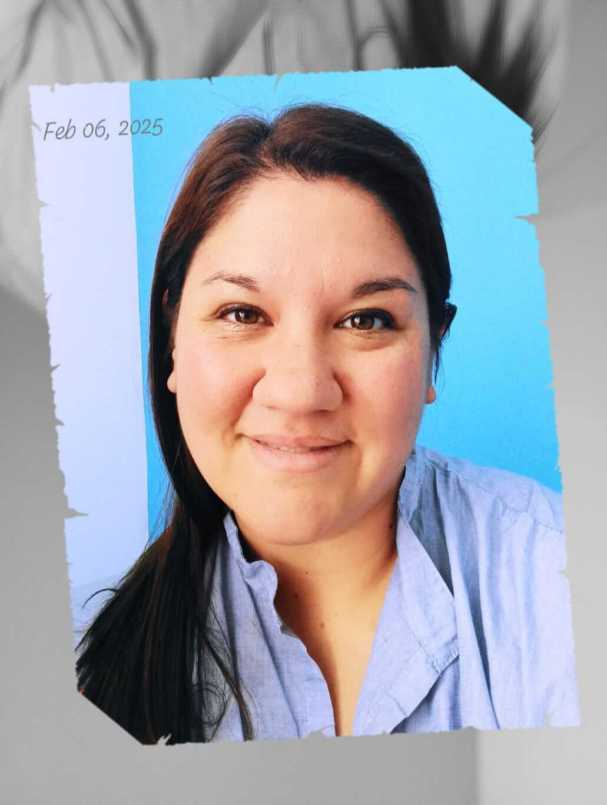

Conoce a tu Fonoaudiologa
Mi Historia y Enfoque
¡Hola! Soy Lic.Ruiz Miranda Romina y mi pasión es ayudar a las personas a superar las barreras de la comunicación. Desde que comencé mi carrera, me he dedicado a ofrecer terapias personalizadas y basadas en la evidencia para niños y adultos.
Aquí puedes seguir escribiendo sobre tu formación académica, tu experiencia profesional, los valores que guían tu práctica y el tipo de ambiente que ofreces a tus pacientes. La idea es construir confianza y mostrar tu lado humano y profesional.